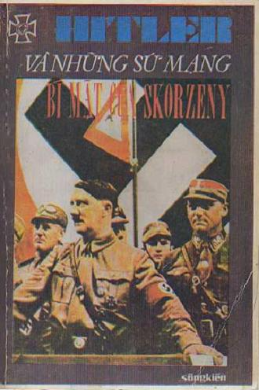

Có ba lý do khiến chúng tôi quyết định giới thiệu với độc giả thiên hồi ký của Otto Skorzeny. Trước hết trong thực tại cũng như trong trí tưởng tượng, khó tìm đâu ra những chuyện phiêu lưu mạo hiểm lạ lùng, khó tin hơn các cuộc phiêu lưu mạo hiểm của viên sĩ quan SS thời danh đó. SKORZENY – chúng ta hãy tỏ ra công bằng đối với ông ta – là NGƯỜI ĐÃ THỰC HIỆN NHỮNG ĐIỀU KHÔNG THỂ THỰC HIỆN ĐƯỢC. Giải thoát Mussolini, chiếm đóng kinh thành Budapest là các hành động vượt xa các nhân vật của Alexandre Dumas, hay các găng tơ được khai sinh trong trí tưởng tượng phong phú của các tác giả loại tiểu thuyết "đen". Không có một chuyện phim nào có thể diễn đạt nổi sự táo bạo, sự mau lẹ sấm sét, sự sống động mà con người đó đã chứng tỏ, trong khi hoàn thành các "sứ mạng đặc biệt" của mình. Thứ hai, hiếm khi có một cá nhân vừa không phải Quốc Trưởng một quốc gia, mà cũng chẳng phải là Tư Lệnh một đạo binh, lại đóng một vai trò quan trọng như vậy trong lịch sử chính trị và quân sự của một cuộc chiến tranh. Thật vậy, trong thời bình, những biến chuyển của tình hình phần lớn lệ thuộc vào các thừa số đã có sẵn hay ít ra, cũng tiên liệu được, đặc biệt là các thực tại kinh tế; trong thời chiến, tình thế khác hẳn: ngay tiếng súng đại bác đầu tiên, Lịch sử trở nên cuồng loạn, nếu có thể diễn tả như thế, dòng lịch sử biến chuyển theo các khúc quanh không đều, bất định và hiển nhiên không hợp lý chút nào, bởi vì từ đó tất cả đều lệ thuộc vào một vài dữ kiện không giải thích được liên quan đến lãnh vực con người: đó sẽ là thái độ của một nhóm người được đặt vào vị trí chỉ huy và quyết định hồi chung cục cho cuộc chiến đấu. Vậy mà Skorzeny, vốn chỉ là một sĩ quan như muôn ngàn sĩ quan khác, nhưng điều đó cũng không ngăn cản được ông đóng góp, hơn cả một đạo binh Thiết kỵ có thể làm, vào việc kéo dài sức đề kháng của Đức và do đó, kéo dài cuộc chiến tranh. Về phía Đồng minh, chỉ có một hoạt động cảm tử có hậu quả trầm trọng, có thể so sánh với hai công trình chính yếu của Skorzeny: đó là công nghiệp vĩ đại và kỳ diệu của năm người Na – Uy trong vụ phá hủy toàn kho dự trữ "nước nặng" (eau lourde) của Đức. Chắc chắn rằng Skorzeny không phải là một anh hùng thuần chính như các công dân vùng Bắc Âu chiến đấu chống lại bọn xâm lăng tổ quốc họ. Đó là một nhân vật SS điển hình nhất. Điều nầy tạo thành lý do thứ ba biện minh cho việc xuất bản quyển sách nầy. Hiện tượng Skorzeny chỉ là kết tinh của hiện tượng Quốc xã dưới hình thức tinh vi nhứt, do đó nguy hiểm nhứt. Đó là con người không bao giờ tự vấn nền tảng luân lý của hành động mình cũng như về những cơ vận đưa đến thành công. Cuốn sách nầy cũng sẽ làm sáng tỏ một vài bí ẩn của trận Thế Chiến Thứ Hai và sẽ chứng minh thêm một lần nữa rằng guồng máy được coi là vạn năng chẳng là gì cả nếu không có con người ở đằng sau.
NHÀ XUẤT BẢN